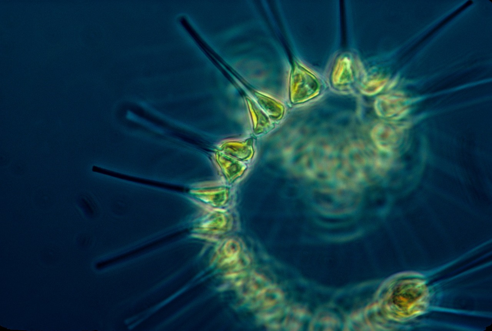
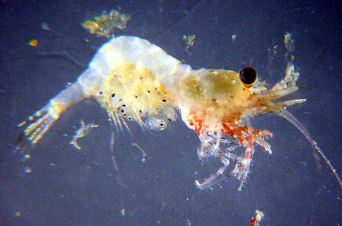
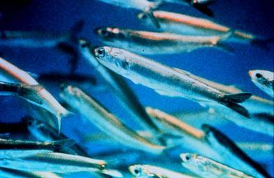
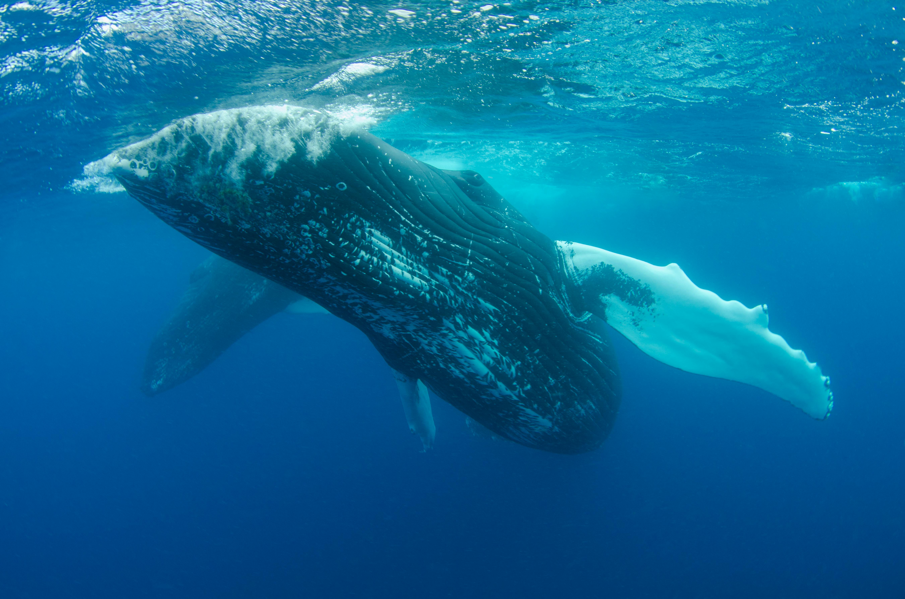
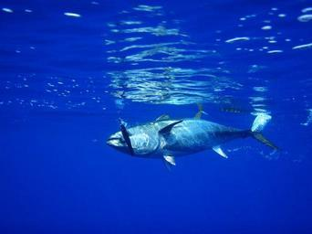
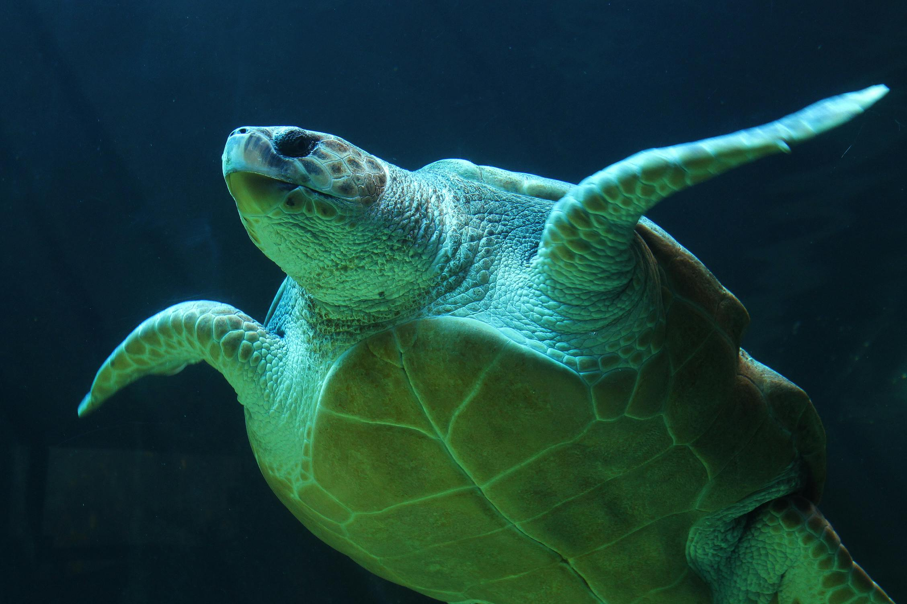
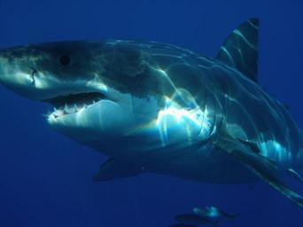

EXPLORE THE ATLANTIC OCEAN FOOD CHAIN
The Atlantic Ocean is full of fascinating marine animals! Learn about their nutrition, natural predators, and the variety of species you can find of each animal, such as the tiger jellyfish and moon jellyfish.
Phytoplankton
Nutrition: produce food through photosynthesis
Predators: zooplankton, small fish, jellyfish
Examples in the Atlantic Ocean: cyanobacteria, diatoms
Zooplankton
Nutrition: consume phytoplankton and smaller zooplankton
Predators: small fish (such as anchovies), jellyfish, crustaceans, whales
Anchovies
Nutrition: consume plankton, especially zooplankton
Predators: larger fish, seabirds, dolphins
Examples in the Atlantic Ocean: European anchovy, Peruvian anchovy
Jellyfish
Nutrition: consume zooplankton, small fish, and larvae
Predators: sea turtles, some fish species, seabirds
Examples in the Atlantic Ocean: moon jellyfish, lion's mane jellyfish

Whales
Nutrition: primarily consume krill (a type of zooplankton)
Predators: few predators, but vulnerable to orcas in rare cases
Examples in the Atlantic Ocean: blue whales, humpback whales
Tuna
Nutrition: consume smaller fish, squid, and crustaceans
Predators: sharks, dolphins, larger tuna, humans
Examples in the Atlantic Ocean: Atlantic bluefin tuna, yellowfin tuna
Dolphins
Nutrition: consume fish, squid, and crustaceans
Predators: sharks, killer whales (in rare cases)
Examples in the Atlantic Ocean: bottlenose dolphin, Atlantic spotted dolphin

Turtles
Nutrition: varies between species (leatherback sea turtles primarily consume jellyfish)
Predators: sharks, orcas, humans (through egg collection and fishing gear entanglement)
Examples in the Atlantic Ocean: green sea turtles, loggerhead turtles, leatherback sea turtles
Sharks
Nutrition: consume seals, sea lions, fish, and occasionally turtles or smaller sharks
Predators: apex predator, but vulnerable to orcas
Examples in the Atlantic Ocean: great white sharks, hammerhead sharks, whale sharks
